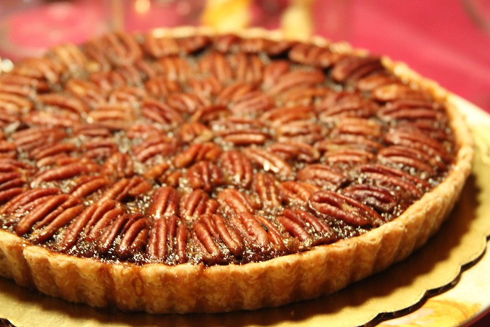

Pecan Pie

Description
Do you love sweet gooey centers? Do you enjoy pecans? Our final recipe for today is grandma's homemade pecan pie. Come along on this journey to craft the best nut pie you've ever had.
Ingredients
- 1/4 cup butter (melted)
- 1/2 cup sugar
- 1 cup dark corn syrup
- 3 eggs (beaten)
- 1 cup whole pecans or to preference
- 1 teaspoon vanilla
Directions
- We are going to mix all ingredients.
- Melt the butter first, add in the rest of the ingredients one by one, pecans last.
- Pour into unbaked pie crust (9" pie pan)
- Bake at 350 degrees for 50-55 minutes (watch).
- Use a knife in the middle of the pie to test if it is done after 45-50 minutes. The knife should come out clean.
- Enjoy!
Home